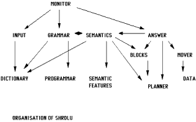

A little bit of history about Artificial Intelligence
From the ancient times to nowadays a fusion of the human system of thought in a rational model has been pursued, with research is continuing today.
In 1642, the philosopher and mathematician Pascal was the first to implement these techniques in a mechanical calculator. One century later, the philosopher Leibniz made improvements upon Pascal's machine and proposed a mathematical modeling of the thought.
A good number of thinkers of the 18th and 19th centuries were convinced that a system of formal reasoning, based on a manner of mathematics, could describe in a rational model the entirety of the human thought, in order to be used to solve all kind of problems. Thomas Jefferson, for example, was persuaded that such a system already existed, and that man was only left to discover it.
In the 19th century, George Boole proposed a system of "laws of the thought", in which basic relative concepts, "AND", "OR" and "NOT" were enough to establish the ways in which ideas and objects bind between each other. The encoding of logic according to Boole could apply to the human thought in its entirety, and to any of its objects.
At the beginning of the 20th century, B. Russell and A. N. Whitehead published Principia Mathematica, which marked the beginning of the interest of the present philosophy for the formalization of rationality in order to analyze knowledge mathematically: formal logic. At that time, scientists started to visualize synaptic connections of the brain, and the word "cybernetic", describing the study of control and communication in biomechanical systems, started to gain fame. Claude Shannon was writing his theory about information.
Computers came. The computers' memory being a purely symbolic landscape, it seemed the ideal place for synthesizing the results of works over the past 2000 years. In 1936, Alan Turing exposed its theory about the ultimate machine: an unlimited memory capacity, populated with symbols, with a minimal program also written in form of symbols, being used as a scanner, for reading and interpreting these symbols. The "program" and the "data" being confused in the same memory segment, it thus gained the capacity of modifying itself. The "Turing machine" would thus have been able to solve all kind of problems and to simulate, according to Alan Turing, human intelligence (though this interpretation of intelligence is still subjected to heated debate).
In 1957, Allen Newell and Herbert Simon invented the General Problems Solver.
In 1958, McCarthy invented the LISP language, an interpreted language of symbols giving the machine the possibility of modifying its own program.
In 1966, Joseph Weizenbaum created Eliza, the first chatter bot.
In 1970, Terry Winograd created SHRDLU, the first program capable of COGNITIVE THINKING.
Heterarchical organization of SHRDLU

Since then, nothing. The computer industry having chosen the commercial aspect to the detriment of the scientific application, works on the AI stopped. Only some specialized laboratories still continue to do research. Winograd's works have been forgotten, his program does not run anymore on any machine and nobody is even able to understand it in order to port it on a modern architecture. Eliza is still being used, in more or less good implementations, in IRC channels, as a chat bot for amusing the net community.
Appearance of cognitive thinking. Birth of Artificial Life.
Eliza was a chatter bot capable of rather interesting conversations and even having a certain tendency to psychoanalysis, but whose big deficiency was that it did not understand what it was saying. Its technology has however been duplicated in many alternatives (Parry, the paranoid chatbot, and Alice, which were its successors), then Jason Hutchens used the works of Markov, statistician mathematician whose theory on the language wanted that the syntactic construction of the message is only a matter of probabilities of placing such word in front of such other, according to the preceding words and those supposed to follow. Its theory of the stochastic language models led to a major revision on the theories on the human expression channels. Grammar and syntax, necessary rules for decoding the information in natural language, would only be products of the expression, and not the contrary. Jason Hutchens created then MegaHAL, a chatter bot initially able to say nothing, but able to learn any language provided one wanted to teach it. The robot revealed a rather spectacular capacity of training, but still did not have the comprehension of what he said. Although grammatically correct, some of its sentences could be compared to the speech one could have with a person who speaks unconsciously during his sleep.
SHRDLU was the first machine able to actually understand the world. The system was constituted of a virtual robotic arm and camera (its "eye"), and its world was limited to a certain number of stackable color blocks, shuffled on a table. It showed the ability to carry out rather complex handling with these blocks, like, given the request of the user, to explain what it did and why it did it, to ask the significance of things it did not understand and to learn from them. That was the first artificial intelligence.
Nobody has ever been able to make better since then. This program was indeed a living being, not in our real world, but a living being in its virtual world of cubes and stackable blocks, fortunately unable to transcend it, just like ourselves are unable to transcend the four perceptible dimensions of our Universe (x, y, z, t) to perceive others.
Virtual worlds.
Counter-Strike: a bot attacking

Today, video games constitute the ideal ground for establishing AI. Video games' virtual worlds are rather simple geometrical worlds, covered with textures of purely aesthetic utility for the player, whose few interactive objects are described in the form of entities, having certain properties, and whose action of one on the other can sometimes prove to be useful, or even necessary, during the game, which storyline constitutes the History of that Universe.
Our real world, with its complexity, could pretty well also be the virtual world of a merry troop of gods playing Civilization over the network. We humans could be bots, the Big-bang would correspond to the server boot-up, the Buddha would be a player having finished the game and Jesus Christ just a newbie having lost at level 1. But since it is obviously unthinkable that it could be the case, we humans are very wise and willful gods (aren't we), and must then grant to AI the same respect that our Creator grants to us, the supreme nobility of the god being here agreeing Freedom to its creature (extremely difficult thing finally, if one thinks well).
Project goals.
The project goals have evolved. My previous works, concretized in the shape of the RACC preview, showed that it was possible for the usual bots of this type of play, to move from the statute of schedule-based automatons with programmed navigation to that of automatons able to concretize in coherent actions the deductions resulting from the immediate analysis of their environment (to pass from task schedulers to the continuous evaluation of the present instant).
Rational Autonomous Cybernetic Commandos (RACC) is a bot AI development project aiming at creating a virtual form of life, having intelligence of its environment, through NPCs (non-player characters) in first-person shooter games such as Counter-Strike. The layout of the code is based on the HPB template, a work completed by botman allowing an effective interfacing between the Half-Life game engine and almost any MOD DLL. botman was kind enough to give his source code away to the Half-Life coding community, and many developers used it in order to create their own plugin. Bots are an example.
The RACC project is being developed under the BSD License, so that anyone can freely use the source code for all possible purposes, provided that the origin of the code is explicitly mentioned in the product, i.e. botman's HPB. A strong emphasis has been put on cleanliness, readability and commenting.
NOTE: BOTMAN IS IN NO WAY AFFILIATED WITH RACC! DO NOT CONTACT HIM FOR ANY QUESTION OR REQUEST ABOUT THIS BOT -- SEE [author] INSTEAD.
Counter-Strike: a bot holding the position